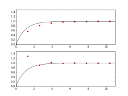

Numerik
Numerische Mathematik in Computern

Nachdem ich nun schon längere Zeit nichts mehr über Chaos und nichtlineare Systeme geschrieben habe, habe ich meinen Urlaub dazu genutzt, mich des Fermi-Pasta-Ulam–Tsingou-Experiments anzunehmen. Hier meine Ergebnisse...
Nachdem ich nun bereits Bifurcation Diagramme mittels Gnuplot visualisiert hatte, wollte ich auch Lyapunov Exponenten berechnen und darstellen...
Bifurcation Diagramme und Gnuplot
22.12.2018

Ich beschäftige mich ja gerade wieder mehr mit Chaostheorie und nichtlinearen Differentialgleichungssystemen. Viele der Visualisierungen, die man hierzu auf dieser Seite finden kann, wurden mit Java3D oder Gnuplot erstellt. Für die Untersuchung von Bifurcation Diagrammen wollte ich etwas neues versuchen.
GC und beliebige Präzision in Java
24.11.2018
Das letzte Mal, als ich über Vor- und Nachteile der Durchführung mathematischer Berechnungen mit verschiedenen Datentypen schrieb, vernachlässigte ich einen Aspekt, dessen Einfluss und Wichtigkeit von der benutzten Programmiersprache und konkreten Implementierung abhängt:
Mathematik mit beliebiger Präzision in Java
11.11.2018
Wann immer ich hier über Experimente mit numerischen Lösungsverfahren für Differentialgleichungssysteme berichte, habe ich im Hinterkopf, dass diese Verfahren eigentlich völlig ungeeignet dafür sind, solche Systeme zu analysieren, da heutige Digitalcomputer bereits rationale Zahlen nicht exakt darstellen können - von irrationalen ganz zu schweigen...

Nachdem ich bereits verschiedene Möglichkeiten der Visualisierung von dynamischen Systemen mit Strange Attractors vorgestellt habe, hier eine weitere Alternative

Nachdem ich erfolgreich einige chaotische Systeme mittels numerischer Verfahren untersucht hatte, reifte in mir der Entschluss, für diese Systeme implizite und explizite numerische Verfahren gegenüberzustellen.
Implizites Eulerverfahren
04.06.2018

Nachdem ich gerade meinen Osterurlaub verlebe habe ich begonnen, ein Thema anzufassen, das mich schon länger beschäftigt - aber für Mathematik brauch ich Ruhe... Ich wollte zunächst hinter die Magie der impliziten Verfahren steigen und schauen, ob es eien Möglichkeit gibt, diese ebenfalls so generisch zu betrachten, dass man auf einfache Art und Weise ein Framework dafür erstellen kann
Schnellere Mathematik durch Bit-Schieben
30.07.2017

Da ich meine Kollegen und Freunde bei jeder passenden und unpassenden Gelegenheit mit den absonderlichen Experimenten nerve, die ich in meiner Jugend mit Computern und Programmieren veranstaltet habe, nuzte ich die Gelegenheit, die sich mir durch einen dazu gefundenen Link bietet...
Manche Java-Programmierer ärgerten sich - zumindest bis Java 7 - immer wieder über die Tatsache, dass Fundamentaldatentypen oder Simple Types nicht nativ in Collections unterstützt werden. Mit der Addition von Auto-(Un)Boxing wurde das zwar etwas einfacher, gleichzeitig wurden aber neue Stolpersteine eingeführt. Ich sehe dieses als gute Gelegenheit, an die Auswirkungen von Machine-Epsilons erinnert zu werden...
Viele Programmierer von Hochsprachen vergessen hin und wieder wie ein Rechner funktioniert. Daher (und für alle Interessierten) hier eine kleine Sammlung von Links, die ein sehr spezielles Thema - machine epsilon - und einen noch spezielleren Problemkontext - iterative numerische Verfahren - beleuchten.


Vor 5 Jahren hier im Blog
-
Lyapunov-Koeffizienten
13.01.2019
Nachdem ich nun bereits Bifurcation Diagramme mittels Gnuplot visualisiert hatte, wollte ich auch Lyapunov Exponenten berechnen und darstellen...
Weiterlesen...
Tags
Android Basteln C und C++ Chaos Datenbanken Docker dWb+ ESP Wifi Garten Geo Git(lab|hub) Go GUI Gui Hardware Java Jupyter Komponenten Links Linux Markdown Markup Music Numerik PKI-X.509-CA Python QBrowser Rants Raspi Revisited Security Software-Test sQLshell TeleGrafana Verschiedenes Video Virtualisierung Windows Upcoming...
Manche nennen es Blog, manche Web-Seite - ich schreibe hier hin und wieder über meine Erlebnisse, Rückschläge und Erleuchtungen bei meinen Hobbies.
Wer daran teilhaben und eventuell sogar davon profitieren möchte, muß damit leben, daß ich hin und wieder kleine Ausflüge in Bereiche mache, die nichts mit IT, Administration oder Softwareentwicklung zu tun haben.
Ich wünsche allen Lesern viel Spaß und hin und wieder einen kleinen AHA!-Effekt...
PS: Meine öffentlichen GitHub-Repositories findet man hier - meine öffentlichen GitLab-Repositories finden sich dagegen hier.